The Mechanatee project combines marine biology, soft robotics, smart
materials, and hydrodynamic engineering to create an autonomous
underwater vehicle that replicates the form, kinematics, and behavior
of a juvenile Florida manatee (Trichechus manatus latirostris)
for discreet environmental data collection and wildlife observation.
The full visual output of the Mechanatee project — anatomical reconstruction,
swimming kinematics, hydrodynamic flow, and design-space comparison — in one place.
Mathematical derivations, force balances, and the engineering details for each of these
figures follow in the sections below.
Anatomical Layover — Five-Panel Exploded View
Five progressive layers from outer envelope to skeleton, modeled after the classic
medical-illustration reference figure. The envelope (panel 1) is regenerated at runtime
from the current muscle and skeletal reconstruction. The nervous system is routed using
comparative cetacean and sirenian neuroanatomy (Reep, Morgane, Marshall, Pabst); musculature
follows the dugong-derived Domning (1977) map; the skeleton is the real manatee STL.
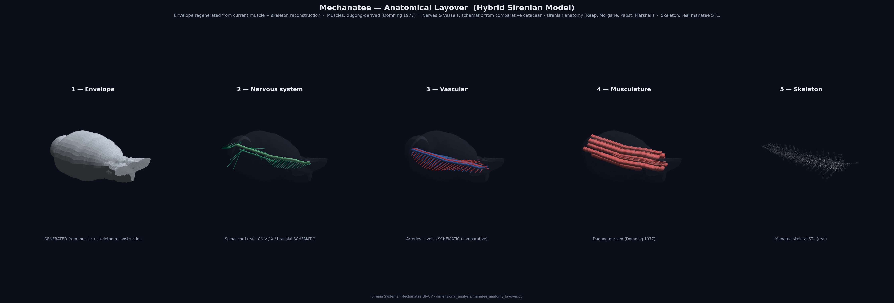
Generated by dimensional_analysis/manatee_anatomy_layover.py.
Hybrid sirenian model — see the Anatomy Sources callout in the Propulsion section.
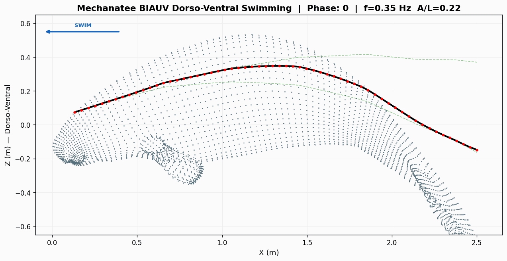
Swim cycle. Dorso-ventral undulation across one full stroke at design
cruise (0.8 m/s, f ≈ 0.42 Hz). Subcarangiform gait derived from K&F07 kinematic regressions.
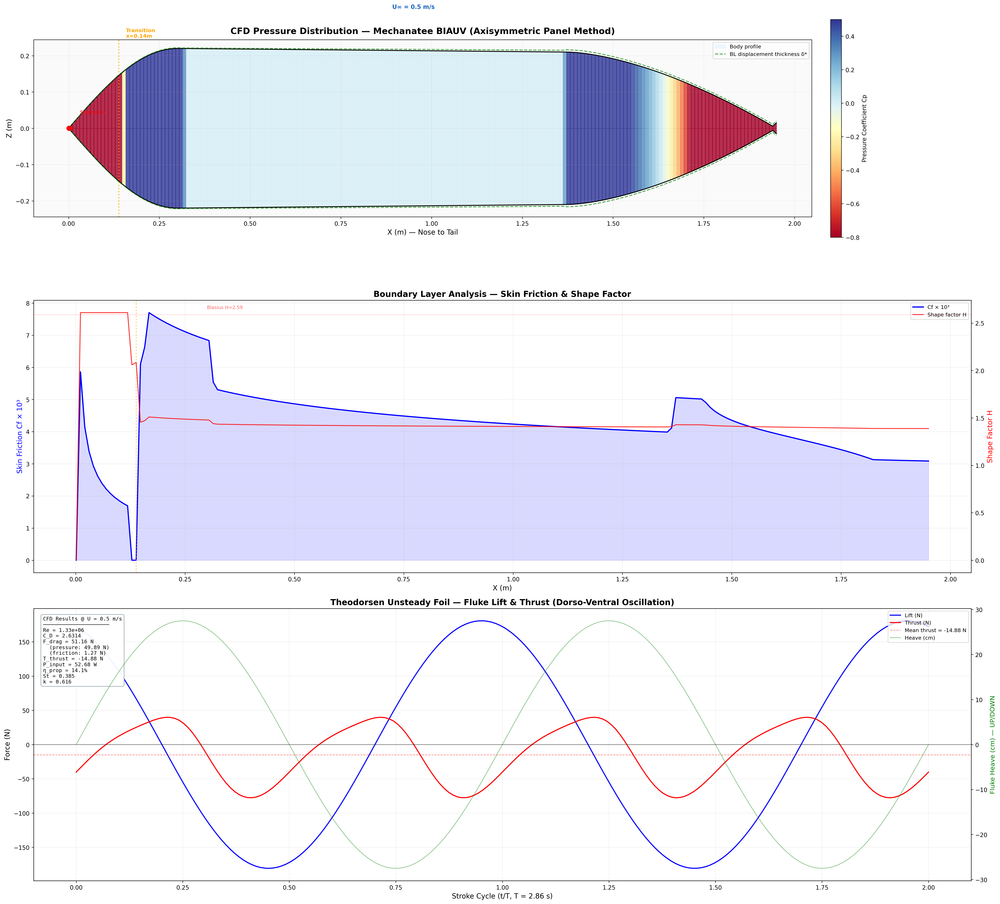
CFD flow. Velocity field, streamlines, and reverse Kármán
vortex street at cruise speed. Panel-method + boundary layer + Theodorsen unsteady-lift
prediction (cfd_hydrodynamic_prediction.py).
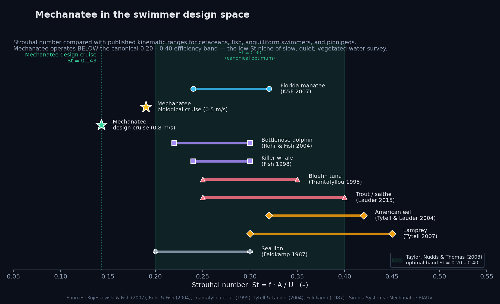
Mechanatee in the swimmer design space. Operating at St ≈ 0.14 —
below the canonical 0.20–0.40 efficiency band. The low-Strouhal niche of slow,
quiet, vegetated-water survey.
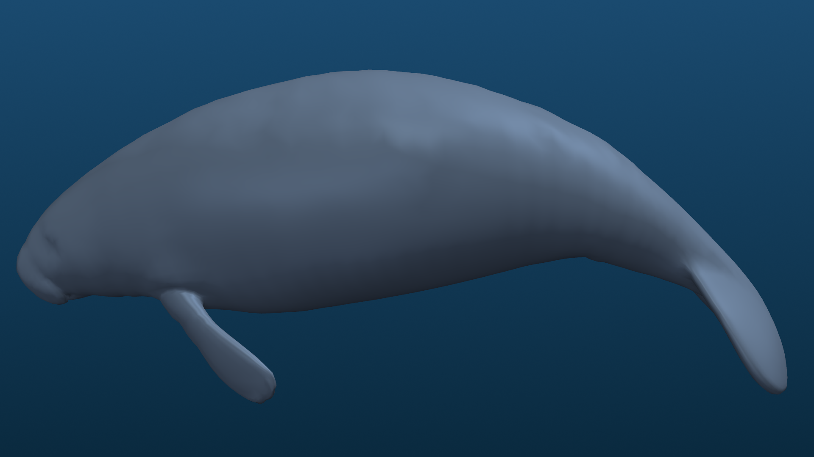
Textured beauty render. Dragon Skin silicone outer body with
Sharklet-inspired antifouling microtexture. Visual indistinguishability target:
juvenile manatee at 5 m in turbid water.
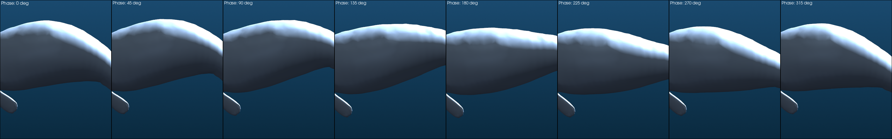
Eight-frame swim sequence. Body posture sampled across one full
undulation cycle. Travelling-wave kinematics with quadratic amplitude envelope.
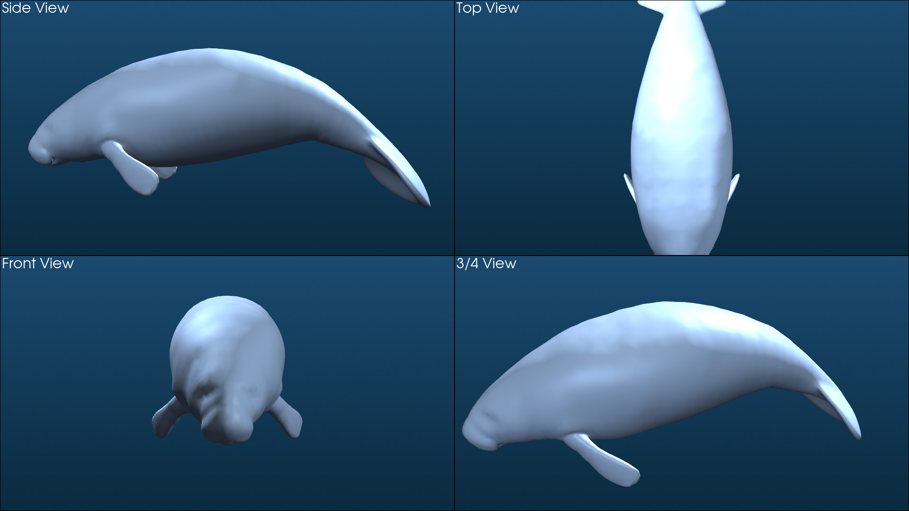
Orthographic multi-view. Side, top, front, and 3/4 perspectives.
Visual indistinguishability target: juvenile manatee at 5 m in turbid water.
▾ The mathematical derivations for every figure above — geometry, kinematics,
Reynolds & Strouhal, Lighthill EBT, Froude efficiency, CPG oscillator network, and
cost of transport — follow in the sections below. ▾
Biomimetic Foundation
Manatee Anatomy & Biomechanics
The Mechanatee's engineering is rooted in the detailed musculoskeletal anatomy
of Trichechus manatus. Understanding how biological manatees generate
thrust through muscle-skeleton interaction is the foundation for every
actuator placement, spine segment, and kinematic parameter.
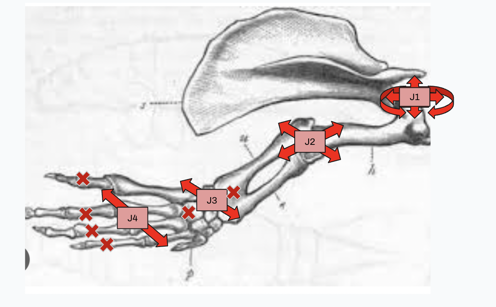
Musculoskeletal architecture of the manatee caudal region showing muscle insertion points, vertebral geometry, and force vectors.
From Biology to Engineering
Aquatic biomimetic robots emerge from the synthesis of ichthyology,
marine biology, hydrodynamics, electronics, mechanics, controls, and
computer science. The manatee offers a unique biomimetic platform:
quiet, efficient locomotion in shallow coastal environments using
low-frequency dorso-ventral undulation.
The manatee axial skeleton is segmented into four functional regions —
cervical, thoracic, lumbar, and caudal. The caudal vertebrae
(24–29 segments) are the primary propulsive elements, with progressive
simplification and flattening toward the fluke. Key muscle groups include:
Longissimus (LS) and Multifidus/Semispinalis (MS) —
extend from the lumbar region to the fluke root, providing the primary
dorso-ventral bending force. The fluke itself contains no muscles — it is
a passive hydrofoil of connective tissue that pitches with the local
spine tangent angle, generating thrust via dynamic angle of attack.
Vibrissae — specialized tactile hairs distributed across the body
enable hydrodynamic sensing of water currents and pressure gradients,
analogous to the lateral line system in fish. This inspires the
Mechanatee's distributed sensor network.
Biological Reference Model
The Florida West Indian Manatee
Target organism: a 6.5 ft (2.0 m) juvenile Trichechus manatus
latirostris. Kinematic parameters from Kojeszewski & Fish (2007)
for adults (mean body length 3.34 m, mass 857.8 kg), geometrically scaled
to the juvenile form factor using length ratio Lr = 2.0/3.34 = 0.60.
2.50 m
Body Length
24–29
Caudal Vertebrae
0.26–0.55 Hz
Stroke Frequency
A/L = 0.22
Amplitude Ratio
η = 0.82
Peak Prop. Efficiency
Re ~ 106
Reynolds Number
The Case for Manatee-Based Biomimetics
Aquatic organisms have been evolving through natural selection for
millions of years, endowing them with morphological and structural
adaptations for highly efficient locomotion. Propellers — the
primary method of AUV propulsion — are inherently inefficient
due to perpendicular vortex formation that directly increases power
consumption.
MIT's RoboTuna (1995) was 16% slower than predicted, hydrodynamically
unstable vertically, and under-predicted maneuverability by a factor
of two. Rather than merely aiming for superficial resemblance, the
Mechanatee emphasizes biological fidelity across four domains: bionic
morphology, kinematics, hydrodynamics, and neural control.
The manatee's fusiform body, spatulate tail, and dorso-ventral
oscillation plane produce a wake with significantly less turbidity
and sediment disruption than propeller-driven vehicles —
critical for wildlife observation and environmental monitoring in
shallow coastal waters.
Biological T. manatus alongside the Mechanatee digital twin geometry.
Vertebral Architecture
The manatee axial skeleton is segmented into four functional regions:
cervical (limited mobility, head support),
thoracic (rib attachment, organ protection),
lumbar (transitional, increasing posterior flexibility), and
caudal (24–29 vertebrae — the primary propulsive segments replicated in Mechanatee).
The Shape Index = 2CL / (CW + CH) describes vertebral elongation by region,
where CL = centrum length, CW = centrum width, CH = centrum height. Progressive changes in centrum geometry, neural spine height, and transverse process width create a natural flexibility gradient from the rigid thorax to the highly flexible fluke.
Biological Kinematic Parameters
Parameter
Biological Value
Regression Model
Source
Stroke frequency
0.26–0.55 Hz
f = 0.24 + 0.22U
Kojeszewski & Fish (2007)
Fluke tip amplitude
22% body length
A/BL = 0.22 (constant)
Kojeszewski & Fish (2007)
Wave velocity
0.8–2.3 m/s
V = 0.51 + 1.09U
Kojeszewski & Fish (2007)
Thrust power
18.1–149 W
Pt = 1.30 + 41.16U + 77.57U²
Kojeszewski & Fish (2007)
Propulsive efficiency
0.67–0.82
Max 0.82 at U ≈ 0.95 m/s
Kojeszewski & Fish (2007)
Wavelength / body length
λ/BL ≈ 0.9 ± 0.2
-
Kojeszewski & Fish (2007)
Reynolds number
7.0×105–2.8×106
Re = ρUL/μ
Turbulent regime
Behavioral Targets for Replication
Cruising locomotion (0.8–1.9 m/s steady-state undulatory swimming) ·
Surfacing for breathing (periodic vertical ascent/descent) ·
Bottom feeding posture (nose-down hovering with flipper stabilization) ·
Social interaction (approach/retreat around other manatees) ·
Resting (neutrally buoyant hovering with minimal movement).
A CNN system logs marine species, monitors environmental changes, and tracks underwater chemical parameters to enable learned behavioral mimicry.
Dimensional Analysis
Body Morphology & Cross-Section Distribution
25,200-point triangulated mesh (Mechanatee BIAUV STL) aligned to a canonical 2.5 m
body axis with 60 cross-section stations computed via convex hull slicing.
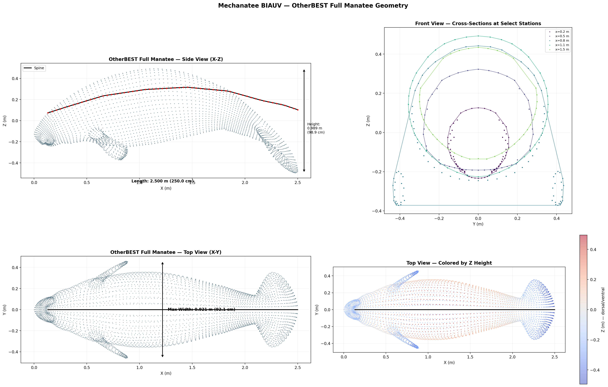
Dorsal, lateral, and cross-sectional views. Principal body axis aligned, nose at origin, centered Y/Z.
Fusiform Body Form
The manatee body follows a fusiform planform — maximum girth near
34% body length (x ≈ 0.85 m), tapering anteriorly to a blunt
rostrum and posteriorly to a dorso-ventrally flattened caudal peduncle.
The raw spine extends 1.425 m, scaled to the canonical body using a
uniform factor:
Geometric Scale Factor
λ = L / Lraw = 2.500 / 1.425 = 1.7544
Dynamic similarity maintained: Re at cruise (~1.9×106) remains turbulent, consistent with adult range.
Dimension
Value
Max cross-section area
0.578 m²
Max width
0.912 m
Max height
0.814 m
Wetted surface area
2.200 m²
Fluke span
0.650 m
Fluke chord
0.280 m
Mesh facets
25,200
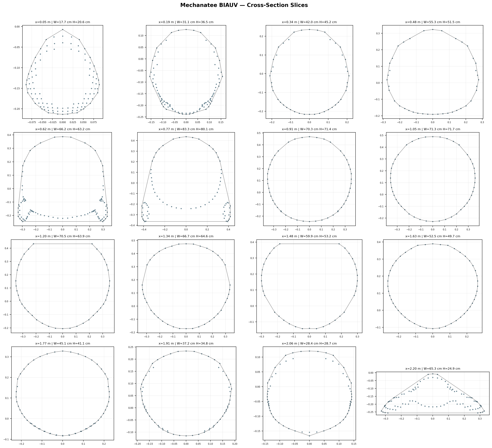
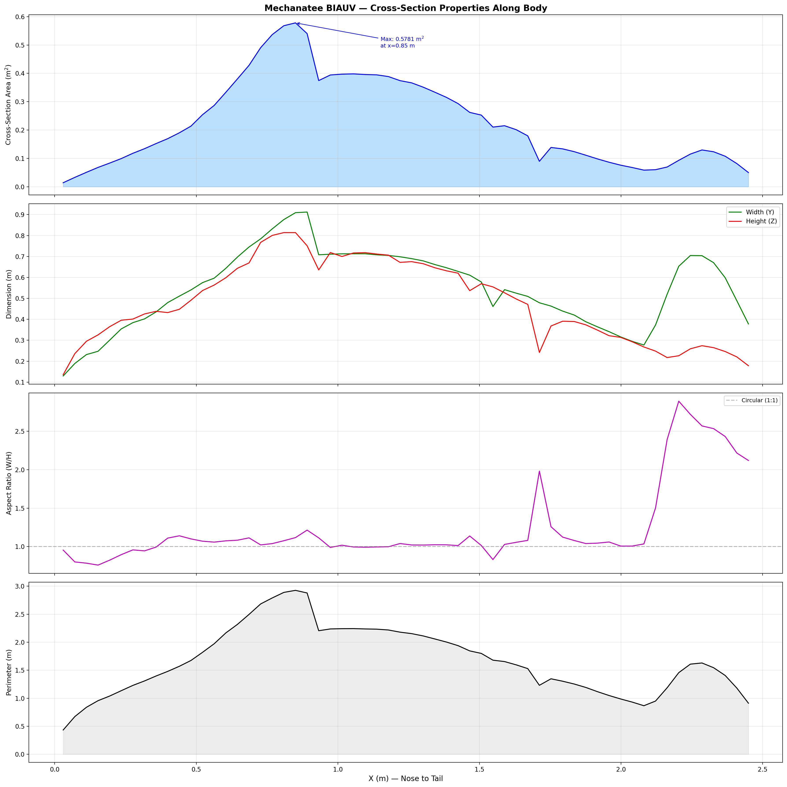
Cross-section area, width, and height across 60 axial stations.
Axial Area Distribution & Added Mass
The area distribution defines the added-mass profile critical for
Lighthill's elongated-body theory. Peak area at mid-body drives
the bulk of inertial coupling with the fluid. The rapid taper
through the caudal peduncle minimizes recoil and concentrates
momentum transfer at the fluke.
Added mass per unit length follows the elliptical cross-section model:
Added Mass (Elliptical)
ma(x) = ρ · π · b(x)²
b(x) = local half-height at axial position x. Varies from ~0.25 m mid-body to ~0.003 m at the thin fluke trailing edge.
The caudal region (x > 1.46 m) encompasses 26 articulated segments
with inter-segment spacing of 40 mm, each individually actuated by
antagonistic muscle pairs in the dorso-ventral plane.
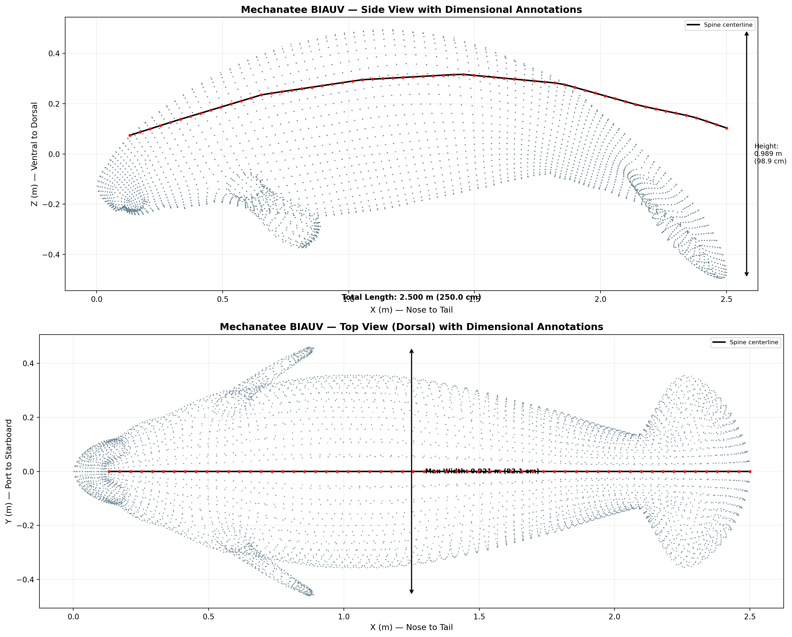
Principal body dimensions and regional boundaries (cervical, thoracic, lumbar, caudal).
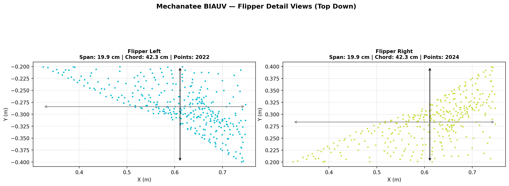
Pectoral flipper planform. Used for pitch/yaw stabilization and low-speed maneuvering.
Locomotion Physics
Swimming Kinematics
Manatee swimming is classified as subcarangiform: dorso-ventral undulation
propagating as a traveling wave from peduncle to fluke tip, distinct from
the lateral undulation of most fish.
Progressive Wave Model
The tail displacement at each point along the caudal spine follows a
traveling sinusoidal wave. The amplitude grows quadratically from
the tail base to the fluke tip:
Cycle period range: 1.7–3.3 s. Two reference speeds are used throughout this analysis:
biological cruise = 0.5 m/s (mean adult manatee swimming speed, Kojeszewski & Fish 2007) → f = 0.35 Hz; and
design cruise = 0.8 m/s (Mechanatee target operating point near peak ηp) → f = 0.416 Hz, T = 2.40 s.
All Strouhal, drag, and thrust numbers below are reported at the design cruise unless noted.
Wave Speed
Vwave = 0.51 + 1.09U [m/s]
Always exceeds body speed, maintaining thrust-generating phase lag.
Segmental Peak Acceleration
a(x, t) = −A(x) · ω² · sin(kx − ωt)
Drives inertial loads on the actuator system; ω = 2πf, k = 2π/λ.
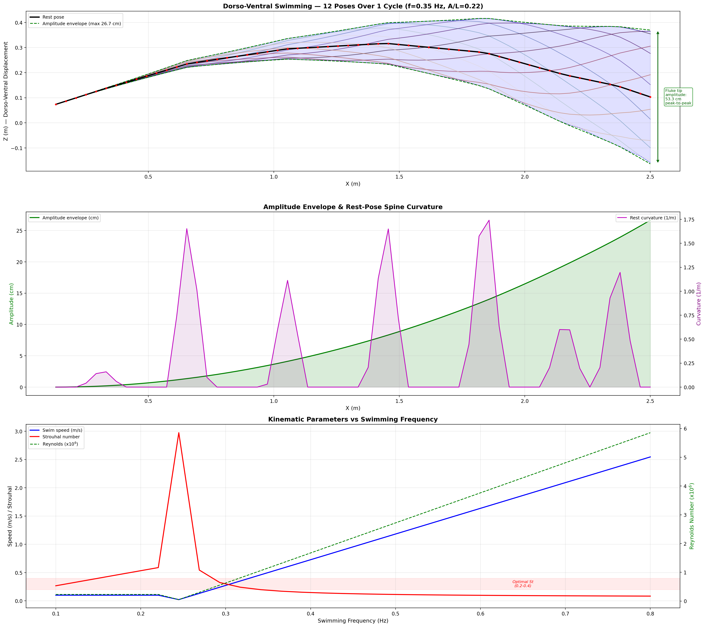
Traveling wave propagation through one complete swim cycle.
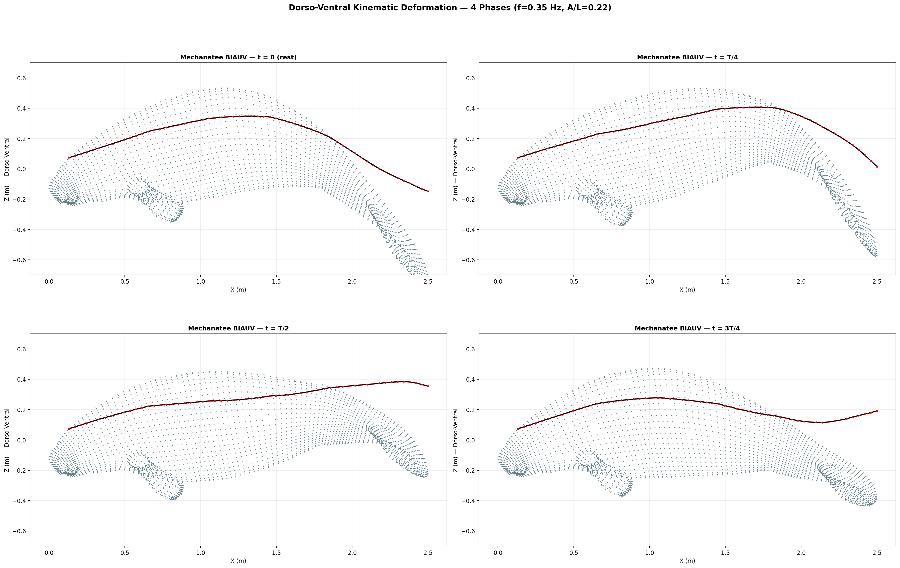
Deformation envelope showing quadratic amplitude growth along caudal spine.
0.275 m
Fluke Tip Amplitude (single-side)
3.32 m
Wavelength (cruise)
26
Caudal Segments
6 per segment
Actuators
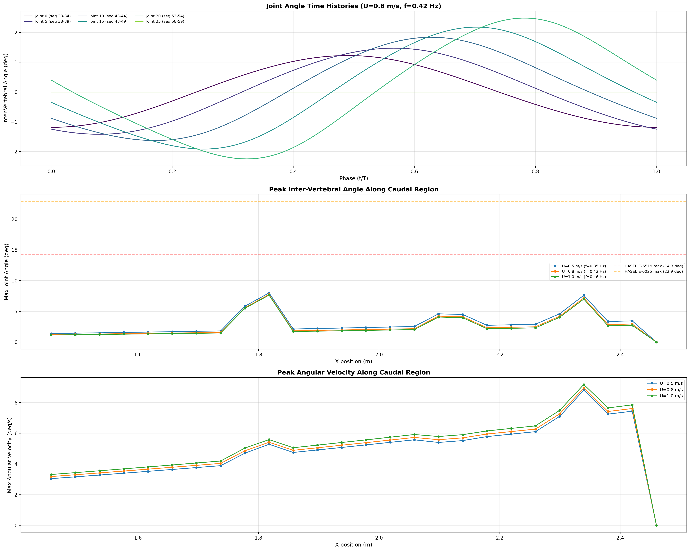
Inter-vertebral angles, peak deflection, and angular velocity across 26 joints at multiple speeds.
Inter-Vertebral Articulation
Each vertebral disk joint allows ±15° dorso-ventral and
±10° lateral articulation via ball-and-socket or flexible
silicone joints. Angular displacement increases distally while segment
mass decreases, creating the characteristic whip-like tail action.
Region
Max Angle
Max ω
Proximal (0–7)
1.5–1.9°
3.8–4.9 °/s
Mid-caudal (8–16)
2.3–5.9°
5.9–7.0 °/s
Distal (17–24)
2.9–7.8°
6.9–11.1 °/s
Joint Angle
θj(t) = arctan[(Δzj+1 − Δzj) / Δxj]
Force Requirements Per Segment
For a single segment of mass mseg ≈ 0.3 kg at f = 0.5 Hz, peak inertial force
Finertia = mseg · A · ω² ≈ 0.05 N.
However, hydrodynamic drag dominates at the fluke tip (v ≈ 0.69 m/s):
Fdrag = ½ρCDA · v² ≈ 2.9 N.
Net actuator force: 5–15 N at distal segments, 1–3 N proximal.
Fluid Dynamics
Hydrodynamic Force Analysis
Thrust, drag, and propulsive efficiency derived from Buckingham Pi analysis,
elongated-body theory (Lighthill, 1971), and Strouhal optimization.
Dimensional Analysis — Key Dimensionless Groups
Buckingham Pi theorem identifies three groups governing the
Mechanatee's hydrodynamic regime:
At cruise (0.8 m/s): St = 0.416 × 0.275 / 0.8 = 0.143.
Below the 0.20–0.40 optimal band (Taylor, Nudds & Thomas, 2003),
consistent with manatees being low-St swimmers. K&F07 report mean St = 0.28
for adults at ~0.5 m/s; efficiency remains high (ηp = 0.73–0.82).
Reduced Frequency
k = πfc / U
Quantifies unsteady effects on the fluke; c = 0.28 m (fluke chord).
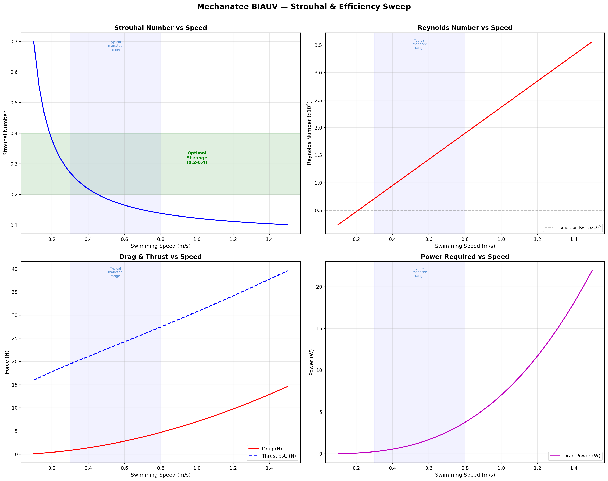
Strouhal sweep showing propulsive efficiency across St range. Mechanatee operates at St ≈ 0.14 at cruise.
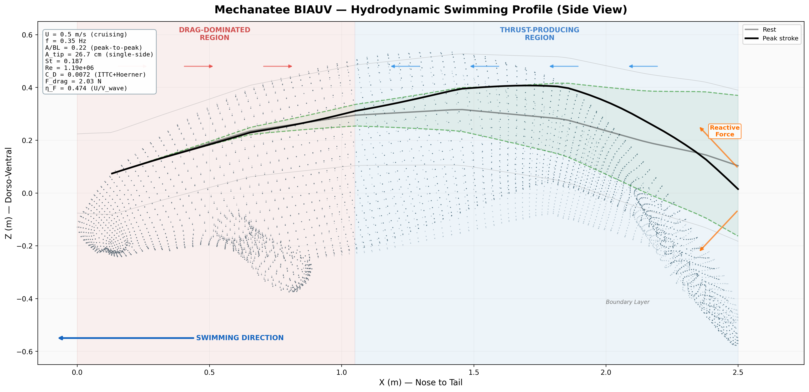
Annotated flow field with thrust, drag, and reactive force components.
Thrust, Drag & Navier-Stokes
The underwater vehicle dynamics are described by revised Newton-Euler
equations incorporating variable buoyancy effects. The system inertia
matrix M combines rigid-body inertia with hydrodynamic added-mass
terms; the Coriolis matrix C(ν) accounts for translational-rotational
coupling; and the damping matrix D(ν) captures linear and quadratic
hydrodynamic damping.
Friction Drag (ITTC 1957)
FD = ½ρU²SwetCD where CD = 0.075 / (log10Re − 2)²
CD ≈ 0.0065 at cruise (Re = 1.9×106, Hoerner form factor k = 1.59); Swet = 2.2 m². FD ≈ 4.7 N.
Lighthill Thrust (Elongated Body Theory)
T = ½ma(L) · w(L,t)² − recoil terms
ma(L) = added mass at trailing edge = ρπb² = 340 kg/m; w(L,t) = dorso-ventral velocity of fluke tip.
Computed in dimensional_analysis/biauv_swimming_suite.py (Lighthill EBT with recoil correction) and cross-checked against the panel-method + Theodorsen unsteady-lift solver in hydrodynamics/cfd_hydrodynamic_prediction.py.
At design cruise (0.8 m/s): net thrust T ≈ 24.1 N vs. drag FD ≈ 4.7 N (full speed sweep in the COT table below).
Kinematic Froude efficiency ηF = U/Vwave = 0.579; this is distinct from the biological propulsive efficiency ηp reported by K&F07 (see ηp column in the COT table).
Force Vector Analysis
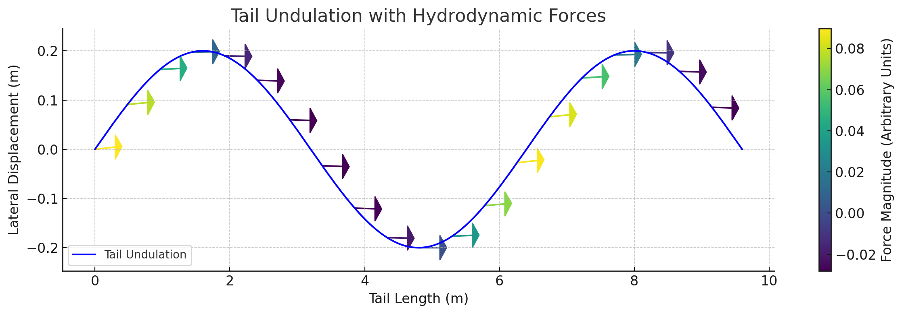
Distributed reactive & resistive forces during tail undulation. Thrust results from the phase offset between dorso-ventral velocity and body curvature.
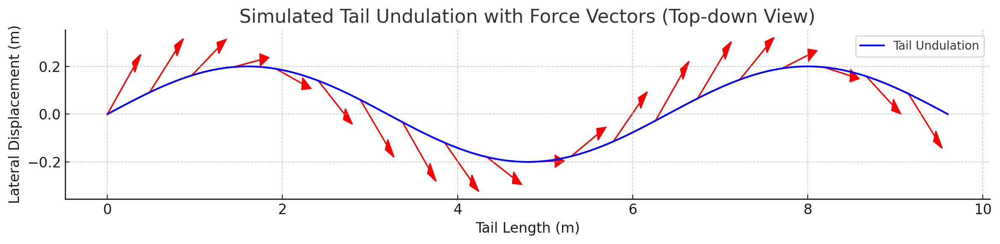
Per-segment force decomposition: inertial, pressure, and net thrust. Distal segments contribute disproportionately due to higher oscillation velocity.
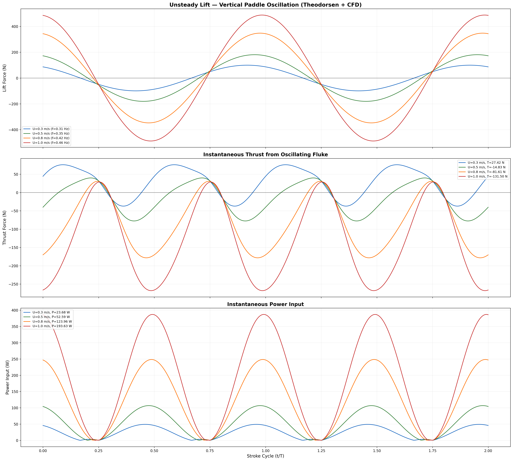
Lift generated dynamically through active modulation of fluke pitch angle — not static control surfaces. SMA-driven deformation enables real-time pitch adjustments.
Joint reaction forces and moment arms along the caudal spine. Proximal joints bear 62% inertial, 38% hydrodynamic loading.
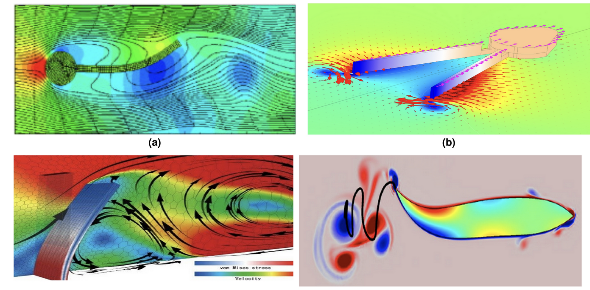
CFD Quad Chart — Biomimetic Wake Comparison
(a) Top-left — Tuna / Thunniform swimmer: Streamline flow around a fusiform body showing attached boundary layer and narrow wake. High-speed, high-efficiency cruising with minimal tail amplitude. (b) Top-right — Squid / Jet propulsion: Pulsed jet expulsion through a siphon generates discrete vortex rings for rapid thrust. High acceleration, low efficiency — the biomechanical opposite of undulatory swimming. (c) Bottom-left — Whale / Cetacean fluke: Cross-section of dorso-ventral fluke oscillation showing vortex stress contours and velocity field. The pitching hydrofoil sheds a reverse Kármán vortex street for thrust. (d) Bottom-right — Eel / Anguilliform swimmer: Full-body undulation with vortex wake structure. Large body-wave amplitude and short wavelength produce thrust along the entire body, not just the tail.
The Mechanatee operates between (a) and (c) — subcarangiform undulation with a cetacean-style dorso-ventral fluke, but at lower Reynolds numbers and frequencies than tuna or dolphins.
Manatee Wake Characteristics
Biological manatee wakes differ from dolphins and tuna in key ways:
lower Strouhal number (St ≈ 0.14–0.28 vs. 0.3–0.4 for dolphins),
larger wavelength-to-body-length ratio (λ/L ≈ 0.9–1.16),
and a spatulate (paddle-shaped) fluke rather than a lunate (crescent) fluke.
The spatulate fluke generates thrust through pitching rather than
pure heaving — the fluke angle of attack oscillates with the local spine
tangent, producing a reverse Kármán vortex street at lower tip speeds.
This yields quieter propulsion with less turbidity, ideal for coastal/estuarine operations.
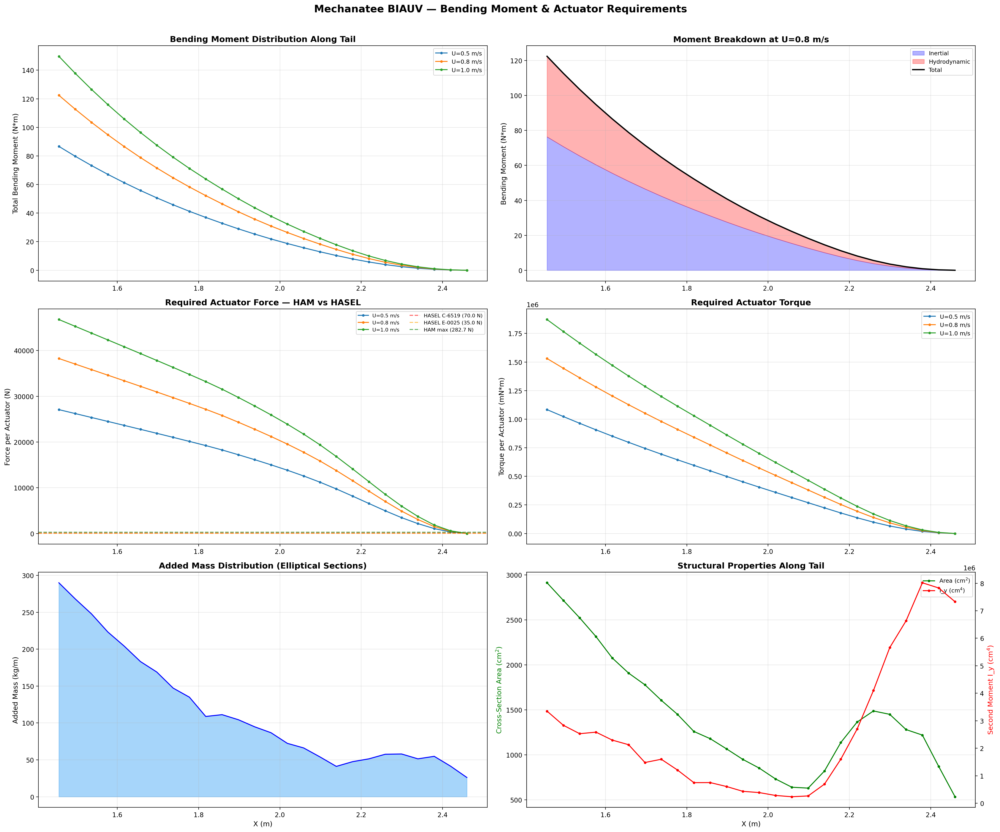
Total bending moment decomposed into inertial and hydrodynamic components across speed range.
Bending Moment Distribution
Each caudal segment must overcome the cumulative inertial acceleration
of all downstream mass plus hydrodynamic reaction forces. Moments are
computed from the tip inward using the added-mass distribution from
the cross-section analysis:
Total Bending Moment at Joint j
Mtotal,j = ∑k=j+1N
(mk + ma,k) · ak · rjk
Peak Mtotal ≈ 122.4 N·m at the proximal caudal joint (x = 1.456 m).
Moment arms range 15–40 mm depending on segment. Load path: ~30% reacted by active actuators (HASEL torque = 2 × 70 N × 40 mm = 5.6 N·m per segment),
~70% borne by passive spine stiffness (PA12 nylon / UHMWPE vertebral disks and silicone inter-disk elastomers).
The proximal joint acts primarily as a structural anchor; active bending authority increases distally
where moments are lower and actuator moment arms are more favorable.
Fluke Stiffness Optimization
Thrust scales as T ∝ Atip². Optimal fluke stiffness balances
flexibility and resistance — low stiffness increases amplitude but risks
uncontrolled deformation; high stiffness improves force transmission but reduces
amplitude. The design target is a fluke with graded stiffness: compliant
at the trailing edge, stiffer at the attachment point.
Actuation System
Artificial Muscle Propulsion
The Mechanatee tail is driven by artificial muscles placed at biologically accurate
attachment sites across 25 caudal segments. Each muscle bundle replicates the
pennation angle, fiber direction, and force vector of its biological counterpart.
The muscles are angled and attached to the facet joints on each end of the
vertebrae for realistic thrust, efficiency, and controlled undulation.
Anatomy Sources — Hybrid Sirenian Model (read first)
Mechanatee uses a hybrid sirenian reference: the musculature mapped onto
the tail comes from dugong (Dugong dugon) dissection —
specifically Domning (1977), the most complete published sirenian myology — while the
vertebral column and fluke geometry are manatee (Trichechus manatus).
No equivalent peer-reviewed manatee musculature dissection of comparable detail is available;
Domning's dugong study is the working reference for the entire sirenian order.
Dugong and manatee musculature are broadly homologous within Sirenia, but differ in caudal
segment count, fluke shape (crescent in dugong, rounded paddle in manatee), and some hypaxial
detail. This hybrid is a deliberate, disclosed approximation; quantifying
where dugong→manatee muscle homology breaks down is itself part of the Mechanatee
research roadmap. Throughout this portfolio, muscle names refer to the dugong-derived map
and skeletal references refer to the manatee.
Functional Muscle Groups — Sirenian Tail (Dugong-Derived Map)
The propulsive muscles below are organized by function. Each group attaches to specific
vertebral processes and fires in coordinated sequence via the CPG controller.
Artificial muscles are substituted at each biological attachment site, preserving
the original fiber angles and force vectors. Muscle nomenclature follows Domning (1977)
on the dugong — see the caveat above on the dugong-muscle / manatee-spine hybrid.
Tail Fluke Upstroke (Dorsal)
Muscle
Scaled Length
Scaled Thickness
Attachment / Function
m. extensor caudae dorsalis
~4.6-5.8 in
~0.4 in
Runs along dorsal spine. Lever arm of dorsal muscles drives upstroke. Attaches to neural spines of caudal vertebrae.
m. longissimus dorsi (LnD)
~4.6-5.8 in
~0.4 in
Long, broad muscle along vertebral column. Extends and flexes the spine. Crucial for undulatory swimming. Attaches across multiple vertebrae.
Tail Fluke Downstroke (Ventral)
Muscle
Scaled Length
Scaled Thickness
Attachment / Function
m. flexor haemalis (FH)
~3.1-4.6 in
~0.4-0.6 in
Flexes the tail ventrally (downstroke). Lever arm of m. flexor caudae ventralis. Attaches to chevron bones and hemal arches.
m. ischiococcygeus (Isc)
~3.1-4.6 in
~0.4-0.6 in
Extends from ischium (pelvis) to tail. Ventral movement and tail support.
m. rectus abdominis (RA)
~6.9 in
~0.4 in
Ventral support along underside of tail. Flexes spine for downstroke assistance.
m. flexor caudae ventralis
Attaches to ventral vertebral processes. Lever arm pivots at each vertebra for controlled downstroke force.
Downstroke Assistance + Lateral Support
Muscle
Scaled Length
Scaled Thickness
Attachment / Function
Sacrococcygeus ventralis lateralis (SVL)
~2.3-3.1 in
~0.4-0.8 in
Tail support, located laterally. Along lower spine and tail. Aids downstroke.
Sacrococcygeus ventralis medialis (SVM)
~2.3-3.1 in
~0.4-0.8 in
Tail support, located medially. Particularly involved in downward motions.
m. latissimus dorsi (LaD)
~6.9-7.7 in
~0.2-0.4 in
Broad, superficial. Wraps around dorsal side. Lateral movement and swimming direction control.
Core Stability + Fine Control
Muscle
Scaled Length
Scaled Thickness
Attachment / Function
Obliquus abdominis internus (OAI)
~3.1-3.9 in
~0.4-0.6 in
Trunk rotation and spine stabilization. Partially wraps tail.
Transversus abdominis (TrA)
~3.1-3.9 in
~0.4-0.6 in
Deep abdominal. Compresses core and stabilizes. Partially wraps tail.
Intertransversarius coccygeus (Intr)
small
small
Between transverse processes of caudal vertebrae. Fine tail adjustments and stabilization.
m. iliocostalis thoracis (IlT)
distributed
distributed
Extends and stabilizes thoracic vertebral column.
Lateral Muscles (Steering / Yaw Control)
Muscle
Scaled Length
Scaled Thickness
Attachment / Function
Sacrococcygeus dorsalis lateralis (SDL)
~2.3-3.9 in
~0.4-0.6 in
Lateral division of epaxial mass at transverse process tips. Produces lateral flexion of caudal peduncle for yaw steering. Works with Intr for turning maneuvers.
Lateral trunk wall
~5.0-7.0 in
~0.2-0.4 in
Continuous lateral sheet between ribs and pelvis. Deep to cutaneus trunci. Provides trunk rigidity and slow yaw correction during cruising.
Lateral caudal flexor
~2.3-3.1 in
~0.3-0.5 in
Deep lateral tail muscle below transverse process tips. Lateral bending force in caudal region for precise yaw control at low speeds.
Structural + Sensory
Structure
Function
Chevron bones (ch)
V-shaped bones on ventral side of caudal vertebrae. Protect blood vessels, serve as muscle attachment points. 9-13 chevron bones per tail.
Caudal vertebrae (Ca)
24–29 vertebrae. Central axis of movement. Ball-and-socket facet joints at each end for controlled pendulum-like oscillation.
Cutaneous trunci (CuT)
Thin muscle sheet beneath the skin. Twitches skin for sensory reactions (analogous to vibrissae sensing).
Intercostales externi (IntE)
Thin layer distributed along length. Minor lateral movement contribution.
The following design principles, derived from the Aquatic Tail & Spine research paper
(Garman), establish the biomechanical framework that governs how biological muscle architecture
is translated into the Mechanatee actuator system. These principles bridge evolutionary biology,
functional anatomy, and mechanical engineering.
Key Biomimetic Takeaways
1. Epaxial vs. Hypaxial Antagonism — Dorsal muscles drive the upstroke,
ventral muscles drive the downstroke. Rhythmic wave generation through antagonistic pairs
is the core propulsion mechanism. 2. Rigid Torso, Flexible Tail — The torso remains stiff via a deep tendon;
epaxial contraction transmits forces through this tendon to the caudal peduncle where actual
bending occurs (Ingle, 2022). 3. Transverse Processes > Spinous Processes — Transverse processes are
longer than neural spines in caudal vertebrae, providing better leverage and deformation
resistance for muscle attachment. 4. Locked Zygapophyses — Evolved to prevent torsion in the spine;
interlocking vertebral configuration prevents rotational instability.
Engineering Translation
5. Rostrocaudal Stress Orientation — Bone is 3× stronger along the
head-to-tail axis. The primary stress direction for lift-based propulsion must be replicated
in the vertebral disk material selection. 6. Pendulum-like Motion — The vertebral column is the central axis/pivot;
inertia carries the tail through each swing while muscles fine-tune speed and force. 7. Muscles Angled to Facet Joints — Muscles attach at specific angles on each
end of the vertebrae for thrust, efficiency, and controlled undulation. 8. Build from the Inside Out — Skeleton → muscles → skin layering
approach mirrors biological development and ensures correct attachment geometry.
Functional Muscle Groups (Garman Classification)
The propulsive muscles are classified into three functional color groups based on their
stroke contribution, following the muscle fiber layout analysis from Domning (1977)
as annotated in Garman’s research.
Red — Upstroke (Epaxial)
Longissimus dorsi (LnD) — Principal epaxial mass, atlas to tail tip.
Extends and flexes spine; crucial for undulatory swimming. Iliocostalis thoracis (IlT) — Thoracic column stabilization.
Lateral to longissimus, pinnate fiber bundles. Transversospinalis — Medial to LnD on neural spines.
Short fascicles spanning ≤4 vertebrae. Includes multifidus and semispinalis fibers.
Blue — Downstroke (Hypaxial)
Flexor haemalis (FH) — Along chevron bone tips, increases posteriorly. SVL — Sacrococcygeus ventralis lateralis. Broad, triangular cross-section.
From caudal transverse process tips and ribs 17–19. SVM — Sacrococcygeus ventralis medialis. Deep to SVL, from lateral sides
of chevron bones. More oblique fibers. Ischiococcygeus (Isc) — Pelvis (ischium) to tail via deep aponeurosis.
Green — Downstroke Assist + Stabilization
Rectus abdominis (RA) — Ventral spine flexion, sternum to ischium. Cutaneus trunci (CuT) — Subcutaneous sheet, axilla to fluke base.
Thick caudal mass unique to sirenians; “its action is clearly to flex the tail”
(Domning, 1977). Obliquus abd. internus (OAI) — Trunk rotation, spine stabilization. Transversus abdominis (TrA) — Deep core compression, ribs 3–19
to pelvis.
Fine Control + Structural
Intertransversarius (Intr) — Long fusiform muscle, 2nd lumbar to tail tip.
Deep bundles (Intrd) between individual transverse processes. Intercostales ext./int. (IntE/IntI) — Between ribs, chest expansion
and core rigidity. Latissimus dorsi (LaD) — Superficial trunk, fused posteriorly
with CuT. Swimming direction control. Obliquus abd. externus (OAE) — Pinnate segments on ribs 3–19,
directed posteroventrally.
Abbrev.
Muscle
Functional Group
Domning Fig.
LnD
Longissimus dorsi
Upstroke
3, 22–24, 49–52
IlT
Iliocostalis thoracis
Upstroke
3, 22–24, 49
FH
Flexor haemalis
Downstroke
51
SVL
Sacrococcygeus ventralis lateralis
Downstroke
49–52
SVM
Sacrococcygeus ventralis medialis
Downstroke
51
Isc
Ischiococcygeus
Downstroke
52–54
RA
Rectus abdominis
Downstroke assist
23, 24, 49–53
CuT
Cutaneus trunci
Downstroke assist
2, 3, 49–52
OAI
Obliquus abdominis internus
Stabilization
34, 50, 52
TrA
Transversus abdominis
Stabilization
50–54
Intr
Intertransversarius coccygeus
Fine control
3, 49–53
LaD
Latissimus dorsi
Structural
22, 32, 46–47
OAE
Obliquus abdominis externus
Structural
23, 33–35, 49
IntE
Intercostales externi
Structural
3, 23, 42, 49
ReI
Retractor ischii
Structural
53–54
Source: Garman, H. (2024). “Florida Manatee Bio-Inspired Tail — Aquatic Spine.”
Sirenia Systems Research. Muscle classification based on Domning, D.P. (1977),
Smithsonian Contributions to Zoology, No. 226.
The muscle architecture of the Mechanatee is mapped directly from dissection studies
of the closely related dugong (Dugong dugon). The following anatomical plates
from Domning (1977) reveal the layered musculature of the posterior trunk and tail
through progressive dissection — from superficial skin muscles down to the deepest
vertebral attachments. Each layer informs actuator placement in the Mechanatee.
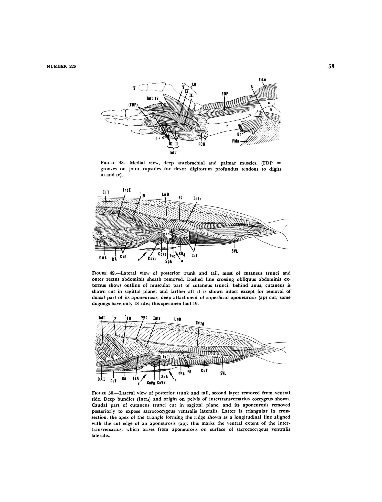
Figures 49 & 50 — Progressive lateral dissection of the dugong posterior trunk and tail.
Fig. 49 (top): Superficial layer with cutaneus trunci (CuT) and outer rectus sheath removed, exposing
iliocostalis thoracis (IlT), intercostales externi (IntE), longissimus dorsi (LnD), intertransversarii (Intr),
obliquus abdominis externus (OAE), rectus abdominis (RA), coccygeus ventralis/dorsalis (CoVe/CoVu),
ischiococcygeus (Isc), and sacrococcygeus ventralis lateralis (SVL).
Fig. 50 (bottom): Second layer removed from ventral side. Deep intertransversarius bundles (Intrd)
and pelvic origin exposed. Obliquus abdominis internus (OAI) and transversus abdominis (TrA) visible.
Sacrococcygeus ventralis lateralis triangular cross-section with aponeurosis (ap) marked.
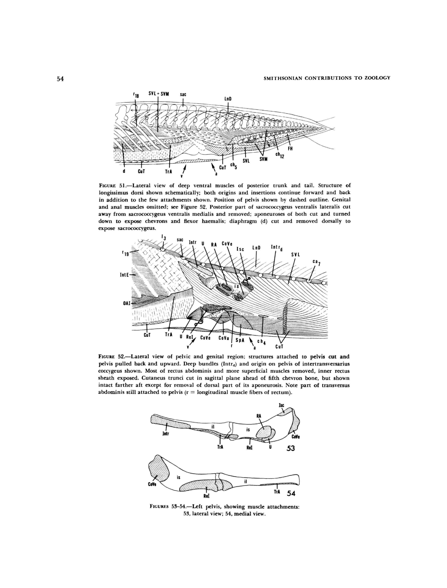
Figures 51–54 — Deep musculature and pelvic attachments.
Fig. 51 (top): Deep ventral muscles with longissimus dorsi (LnD) structure shown schematically.
Sacrococcygeus ventralis lateralis (SVL) and medialis (SVM) exposed alongside flexor haemalis (FH)
and chevron bones (ch5–ch12).
Fig. 52 (middle): Pelvic and genital region. Deep intertransversarius bundles (Intrd) originating
on pelvis. Ischiococcygeus (Isc), rectus abdominis (RA), and coccygeus ventralis (CoVe) attachment geometry visible.
Figs. 53–54 (bottom): Left pelvis bone showing muscle attachment sites in lateral (53) and medial (54) views —
ischiococcygeus (Isc), rectus abdominis (RA), intertransversarius (Intr), transversus abdominis (TrA),
coccygeus ventralis (CoVe), and retractor of the ischium (ReI).
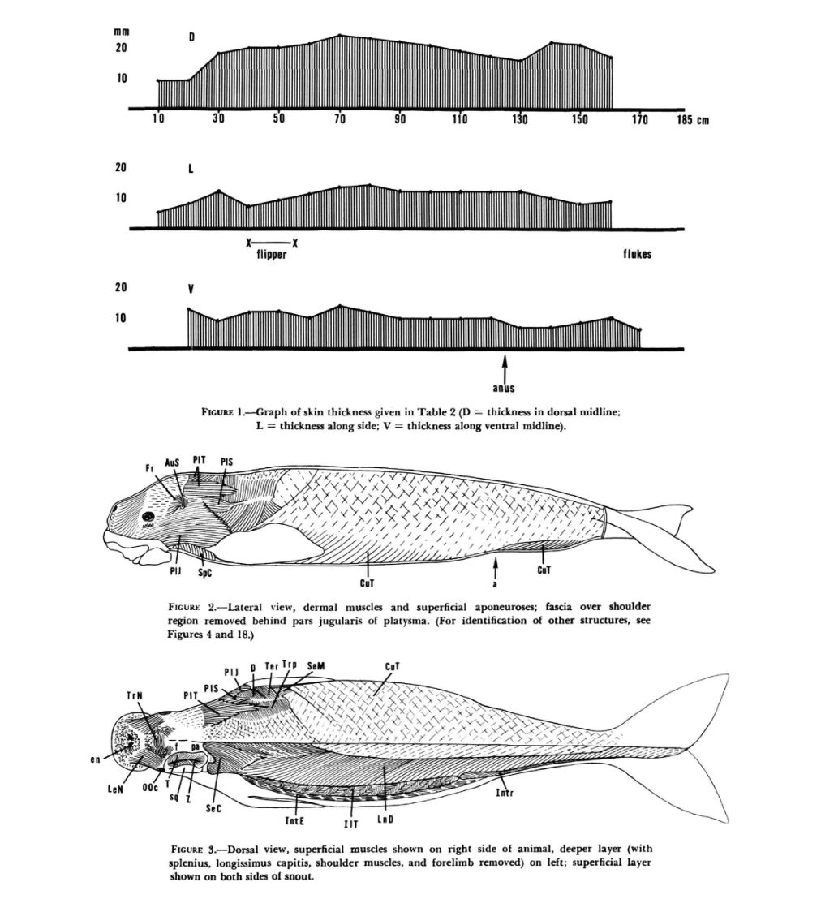
Domning (1977) — Dugong Full-Body Profile.Figure 1 (top): Skin thickness along the body in mm — D = dorsal midline,
L = lateral, V = ventral midline. Thickness varies from ~8 mm (mid-body lateral) to ~18 mm (dorsal head/neck).
Figure 2 (middle): Lateral view of dermal muscles and superficial aponeuroses showing the full
muscle architecture that informs the Mechanatee actuator map.
Figure 3 (bottom): Dorsal view of superficial muscles on the right side; deeper layer on the left
(splenius, longissimus capitis, shoulder muscles, and forelimb removed). This is the source anatomy
for the dugong-derived muscle map used throughout the Mechanatee reconstruction.
Dissection-to-Actuator Mapping
The dugong dissection reveals four distinct muscle layers from skin to spine, each
replicated in the Mechanatee actuator architecture:
Proximal anchor actuators at the caudal peduncle junction; set baseline tail tension and posture
Source: Domning, D.P. (1977). "Observations on the myology of Dugong dugon (Müller)."
Smithsonian Contributions to Zoology, No. 226. Figures 49–54.
Muscle Attachment to Vertebrae
The biological model has specific attachment sites on each vertebra. The muscles
are angled and attached to the facet joints on each end of the vertebrae. By
knowing where the muscles attach to the pelvic bone and throughout each vertebra,
the design replicates the motion control of the biological tail.
Each caudal vertebra has attachment points for 6-8 muscle groups: dorsal extensors,
ventral flexors, lateral sacrococcygeus pairs, and fine-control intertransversarii.
The fiber angles match the biological pennation, with muscles angled from the facet
joints to create both axial contraction and rotational torque at each segment.
The artificial muscles are substituted at each of these biological attachment
sites, preserving the original fiber angles. This creates a force distribution
that matches the biological system rather than using simplified dorsal/ventral
pairs alone.
Actuator Candidates
Two solid-state technologies are under evaluation for these muscle sites:
Parameter
HASEL C-6519 (Artimus)
ThermoFlex MK-1 (Delta)
Technology
Electrostatic (dielectric pouch)
Nitinol SMA (phase transformation)
Force
70 N
TBD (bundled)
Stroke
5 mm
~3-8% contraction
Drive
6 kV
3.6 V / 15 A
Power per actuator
~4 W
~55 W
Frequency (submerged)
0-200 Hz
0.3-0.6 Hz
Form factor
Flat pouch / patch mount
McKibben sheath + integrated PCB
Biomimetic fidelity
Moderate (surface mount)
High (pennated bundles at bio sites)
Fluid system
None
None
TRL
5-6
4-5
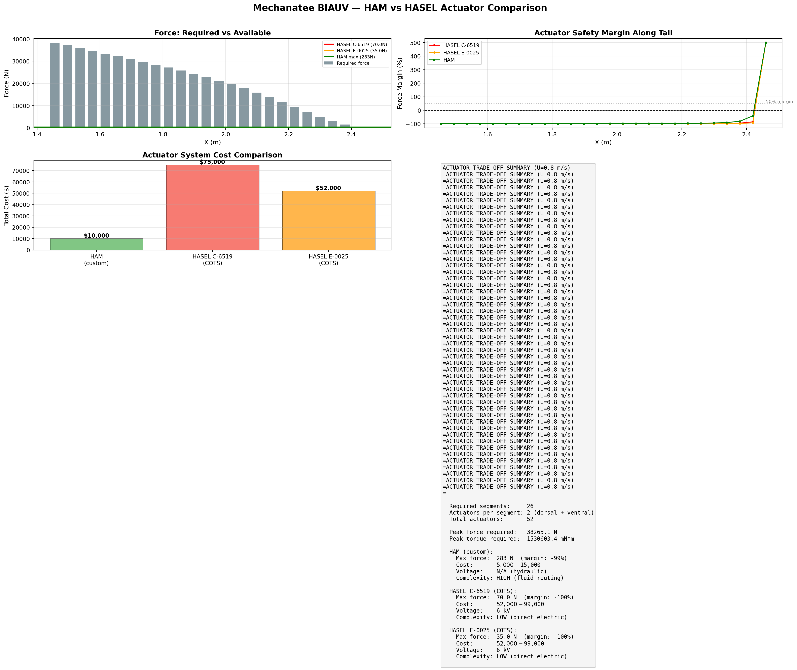
Actuator force, stroke, and per-segment kinematic coverage across the caudal tail.
Per-Segment Kinematic Verification (C-6519-06-06)
Vertebral diameter tapers from 80 mm (proximal) to 30 mm (distal).
Inter-segment spacing: 40 mm. Bending angle θ = Δ/r (small angle, valid for θ < 20°).
Two actuators per segment in antagonistic dorso-ventral pairs.
Region
Segments
Moment Arm r
Achievable θ
Required θ
Verdict
Proximal (base)
1–5
35–40 mm
7.2°
5–8°
PASS
Mid-tail
10–15
25–30 mm
10.6°
10–12°
PASS (marginal)
Peak amplitude zone
18–19
20–22 mm
14.3°
14.3°
PASS (exact)
Distal (tip)
22–26
15–17 mm
16.9°
15°
PASS
Cumulative tip deflection verified: 0.25 rad peak segment angle across 26 segments produces
the required 0.275 m single-side amplitude (A/BL = 0.22 peak-to-peak). Tip amplitude requirement met.
Force check: 70 N at r = 20 mm = 1.40 N·m torque — exceeds hydrodynamic loading
per segment (~0.005 N drag) by orders of magnitude. Stroke is the constraining parameter, not force.
Degree-of-Freedom Configurations
Config
Actuators/Segment
Total
DOF
Notes
A (Full)
6
156
DV + Lateral + Torsion
Full biomimetic
B (4-DOF)
4
104
DV + Lateral
Passive elastomer return
C (2-DOF)
2
52
Dorso-ventral only
Minimum viable — primary swim gait
D (Proof)
2 (alt. segments)
26
DV reduced
Passive compliance between active segments
Recommended: Config C (2-DOF, 52 actuators) is the minimum viable configuration.
Manatees are subcarangiform swimmers — dorso-ventral oscillation is the dominant mode.
Lateral steering is handled by differential amplitude, not separate lateral actuators.
Neuromechanical Control
Central Pattern Generator — Spinal Drive Architecture
Mechanatee's tail is not driven by an open-loop sine wave. The traveling-wave kinematics
emerge from a network of coupled neural oscillators — a central pattern generator (CPG) —
that mirrors the spinal motor circuits found in real swimming vertebrates. This is the same control
architecture validated by Ijspeert et al. on the Salamandra robotica salamander robot, adapted
here for sirenian dorso-ventral undulation.
Why a CPG, not a Lookup Table?
Vertebrate locomotion is generated bottom-up: a small descending drive signal from the
brainstem (the “mesencephalic locomotor region”) sets a single scalar — intent —
and a chain of segmental oscillators in the spinal cord produces the rhythmic muscle activation
pattern, complete with the correct phase lag from one segment to the next. Speed, gait, and
turning all emerge from modulating that single drive signal plus a few asymmetry terms.
For Mechanatee this matters for three concrete reasons:
Robustness. A CPG re-entrains to perturbations (waves, contact, actuator faults) within one cycle — an open-loop sine wave does not.
Smooth gait transitions. Cruise → sprint → station-hold → reverse are all expressed as drive-signal changes, not as separate motion files.
Biological fidelity. The same equations describe lamprey, salamander, dogfish, and (by homology) sirenian spinal locomotor networks. This is the missing biomechanical layer between “anatomy” and “hydrodynamics.”
θi = phase of oscillator at vertebra i; ri = amplitude;
ν = global drive (sets frequency); Ri = target amplitude (sets envelope);
φij = inter-segmental phase bias (sets wavelength); wij = nearest-neighbor coupling weight.
Phase → Joint Angle (Antagonistic Pair)
θjoint,i(t) = ri(t) · cos(θi(t)) · Aenv(si/Ltail)
Aenv is the quadratic amplitude envelope defined in the kinematics section.
The dorsal extensor (epaxial) fires for θi ∈ [−π/2, π/2];
the ventral flexor (hypaxial) fires for the antagonistic half-cycle. This produces the
alternating epaxial/hypaxial bursts seen in sirenian EMG-equivalent dissection studies.
Drive-Signal → Behavior Mapping
A single descending drive vector d = (ν0, ΔνL/R, ΔRU/D)
produces the full behavioral repertoire:
Asymmetric segmental amplitude; ~3 m turning radius
Surface / dive
ΔRU/D ≠ 0
DC offset on dorsal vs. ventral antagonist amplitude — bias the mean tail angle
Reverse (escape)
φij → −φij
Wave propagates head-ward instead of tail-ward
Why this layer was missing — and why it matters
Most fish-inspired AUVs script their tail motion as prescribed sinusoids. That works in a tank
and fails in surge. A spinal CPG is what lets a real animal swim through chop without
re-planning every cycle — it's a closed-loop oscillator stabilized by sensory feedback,
not a clock. Mechanatee adopts this architecture so the same controller spans calm-water
survey, surge-loaded coastal transit, and contact-rich seagrass navigation without modal
switching.
The phase-lagged joint-angle profile across 26 caudal segments — the kinematic output
of the coupled-oscillator network. Inter-segment phase bias φij determines wavelength;
drive frequency ν determines stride.
Implementation Status & Roadmap
An interactive CPG sandbox is available at
dimensional_analysis/simulator_ CPG_Control_actuation/cpg_control_simulator.html
(live drive sliders, segmental phase visualization). The full closed-loop
controller — CPG + force-feedback from segmental load cells + IMU-based gait selection —
is the Phase 2 deliverable, immediately following the HASEL benchtop validation in Phase 1.
Sensory feedback follows the Ijspeert (2014) Science formulation: stretch and load
afferents modulate ν and φij at the segmental level, allowing reflexive
gait correction within a single swim cycle.
References: Ijspeert, A.J. (2008). “Central pattern generators for locomotion control in animals and robots: a review.”
Neural Networks 21(4):642–653. ·
Ijspeert et al. (2007). “From swimming to walking with a salamander robot driven by a spinal cord model.”
Science 315(5817):1416–1420. ·
Crespi & Ijspeert (2008). “Online optimization of swimming and crawling in an amphibious snake robot.”
IEEE Trans. Robotics 24(1):75–87.
System Performance
Efficiency, Cost of Transport & Power Budget
How the Mechanatee's undulatory kinematics translate to real-world
swimming performance, benchmarked against biological manatees and
conventional propeller AUVs.
Froude Efficiency & COT
Froude Efficiency
ηF = U / Vwave = 0.8 / 1.382 ≈ 0.58
Vwave must exceed U for thrust generation — this is fundamental to undulatory propulsion.
K&F07 report biological propulsive efficiency ηp = 0.67–0.82 across the speed range.
Cost of Transport
COT = Ptotal / (mgU) [J/(m·kg)]
Speed
Thrust
Power
ηprop
COT
0.3 m/s
13.2 N
0.15 W
0.72
0.0010
0.5 m/s
17.3 N
0.64 W
0.75
0.0026
0.8 m/s
24.1 N
2.49 W
0.79
0.0065
1.0 m/s
29.5 N
4.25 W
0.81
0.0100
1.3 m/s
39.0 N
9.22 W
0.76
0.0173
1.5 m/s
45.9 N
13.8 W
0.73
0.0231
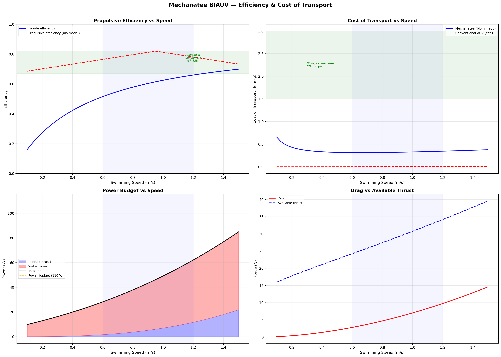
Froude efficiency and cost of transport across the full operating speed range.
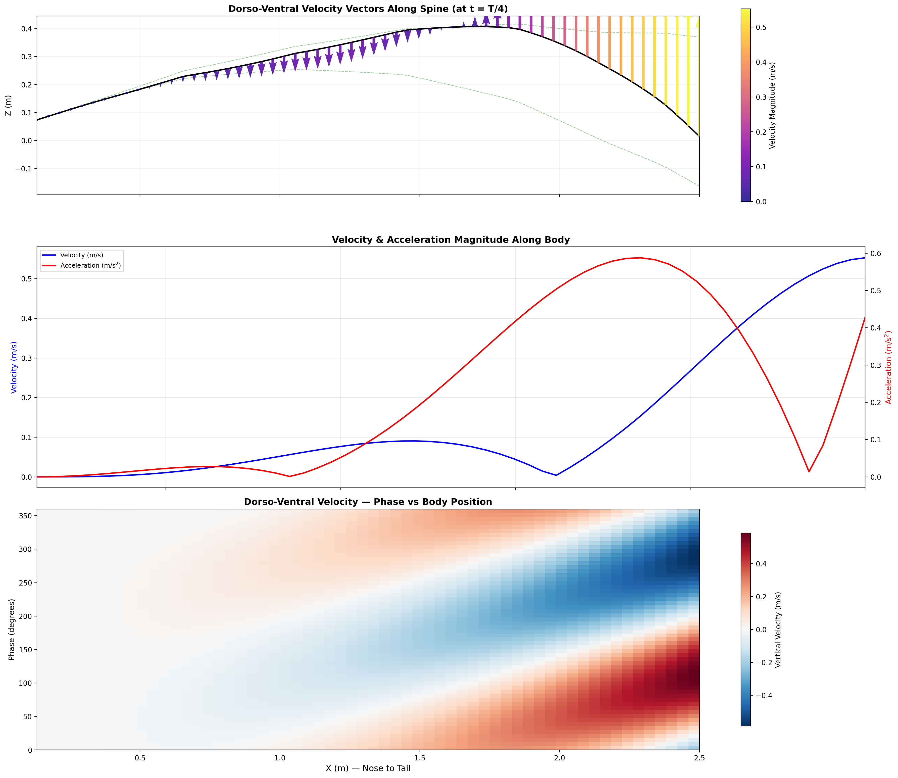
Velocity and acceleration profiles — peak propulsive efficiency at 0.95 m/s matches biological data.
Biomimetic vs. Conventional: The Real Advantage
The biomimetic system produces thrust more efficiently (ηp = 0.75 vs.
propeller 0.50–0.65) but has higher parasitic overhead (~125 W total
vs. ~50 W for a conventional 2-thruster AUV at 1 m/s). The primary advantages are
stealth (no cavitation, near-zero acoustic signature),
environmental compatibility (no turbidity or sediment disruption), and
biomimetic appearance (indistinguishable from juvenile manatee at 5 m in turbid water).
System Power Budget (HASEL Config C)
Subsystem
Peak (W)
Duty
Average (W)
HASEL HV drivers (7× PS2-08-A)
210
50%
105
Central controller (RPi 4 + CAN)
10–15
100%
12
Sensor suite (YSI, DVL, IMU, hydrophone)
5–15
Var.
8
Total
~125 W
No pump, no solenoid valves, no Tesla coils required. The HASEL path trades higher HV driver
power for radical mechanical simplification — 312 fluid connections eliminated.
8-Hour Mission Battery
E = 125 W × 8 h = 1000 Wh → 5.0 kg Li-ion (200 Wh/kg) → 4.0 L
Feasible within the body cavity of a 2.5 m vehicle. 4-hour mission: 2.5 kg, 2.0 L.
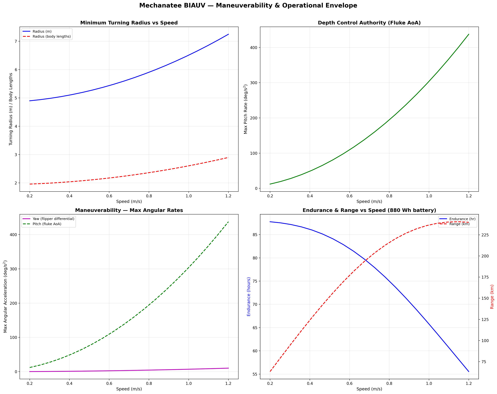
Turning radius and depth authority vs. speed. Variable buoyancy mimics the manatee's use of lung volume for passive depth regulation.
Maneuverability & 6-DOF Dynamics
Turning is achieved through asymmetric undulation amplitude and
pectoral flipper deflection. The 6-DOF dynamics include:
A dynamic ballast system replicates the manatee's use of lungs as
variable buoyancy organs, enabling passive depth regulation without
energy-intensive thrusters.
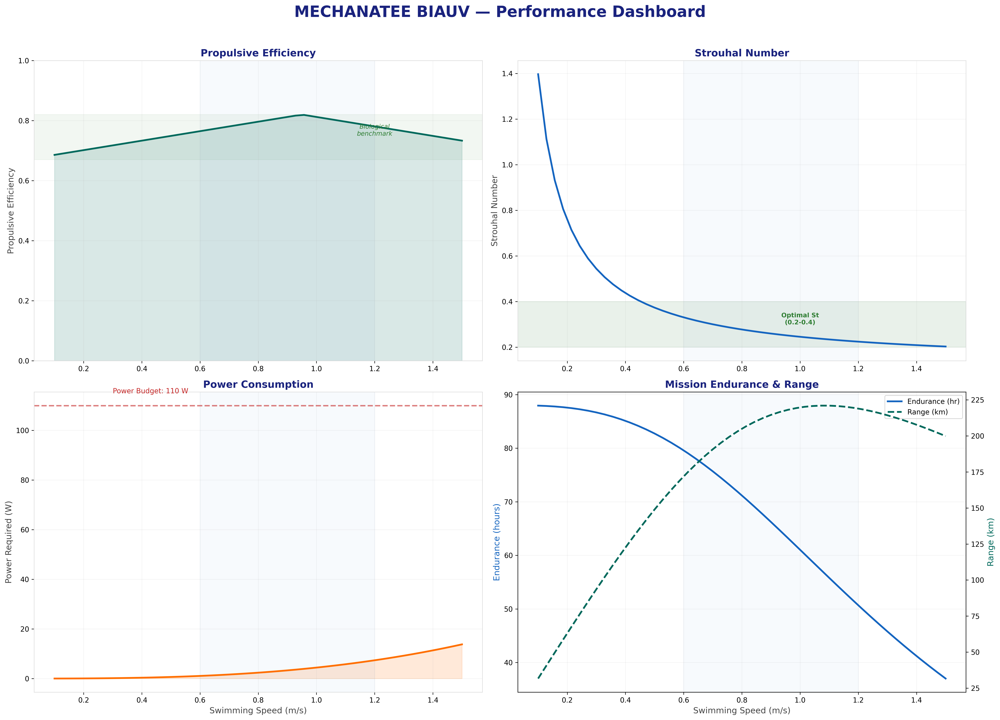
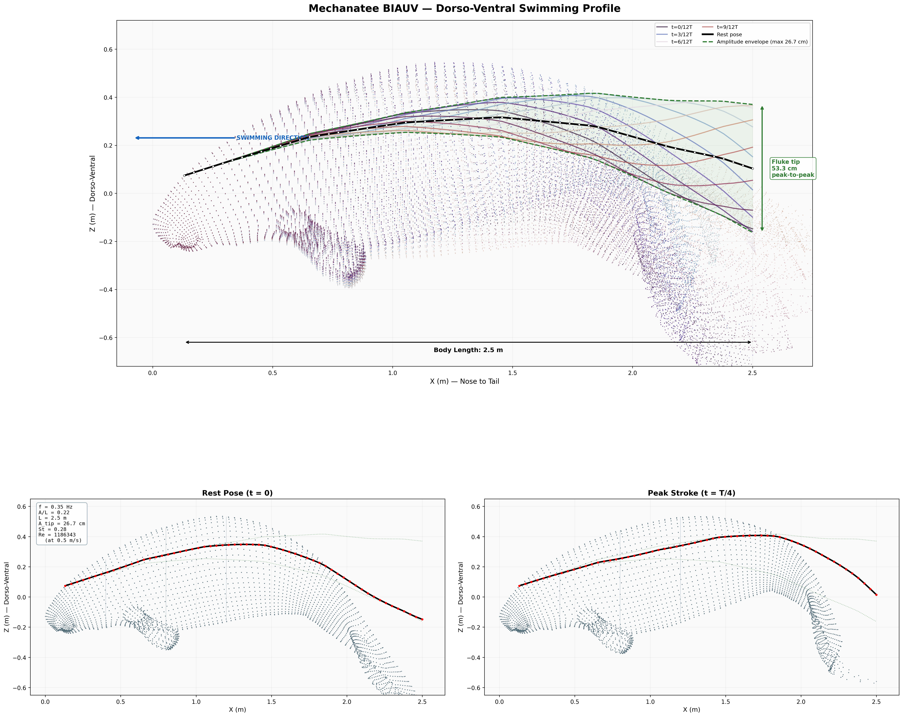
Swimming profile showing body posture across one complete undulation cycle at cruise speed.
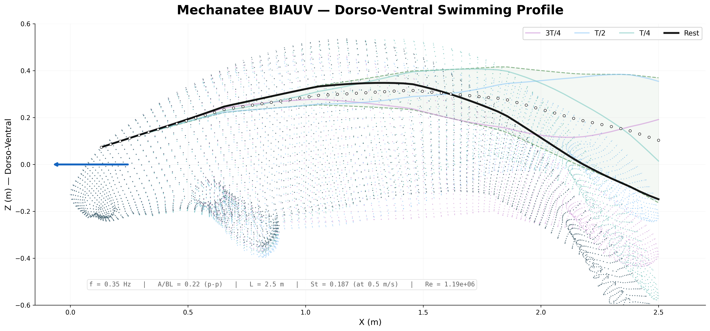
Presentation-quality profile view with dimensional annotations and regional boundaries.
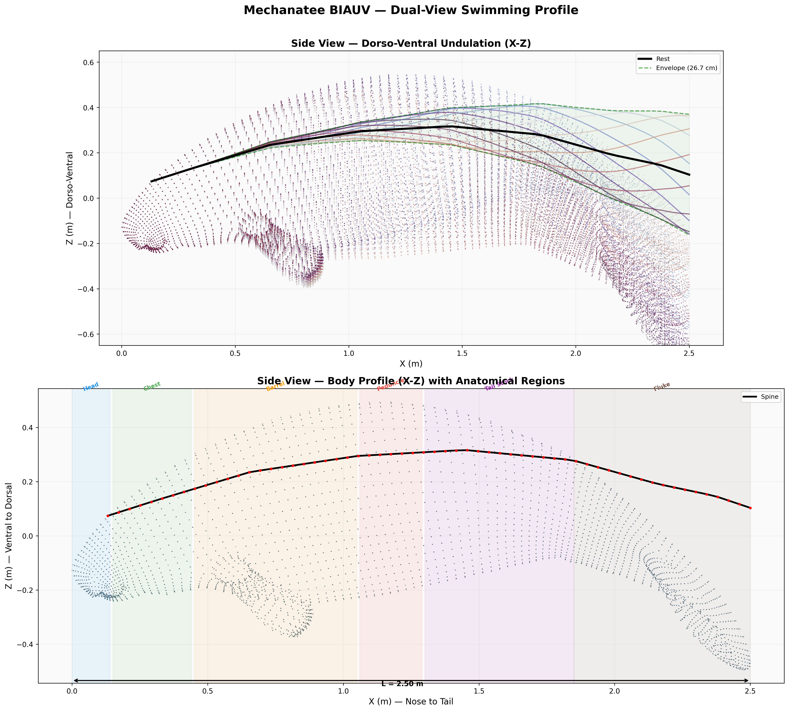
Dual-view profile: dorsal (top) and lateral (side) projections with cross-section overlay.
Hydrodynamic design space: thrust, drag, and net propulsive force as functions of speed and frequency.
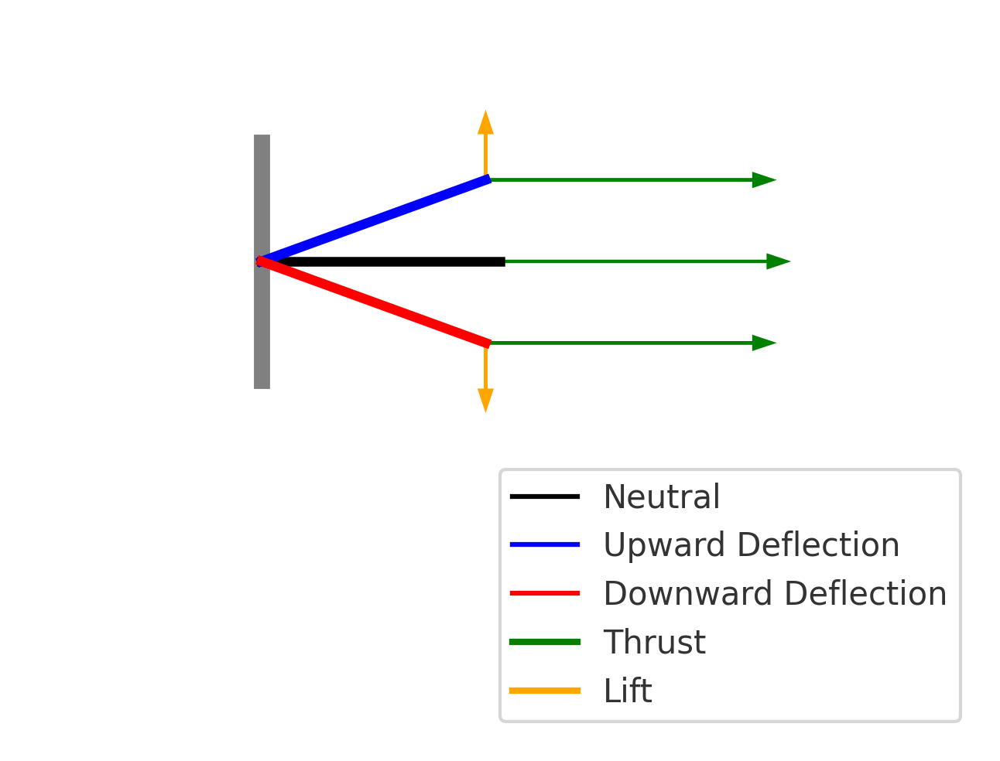
Per-segment force vector decomposition showing inertial, hydrodynamic, and net thrust contributions.
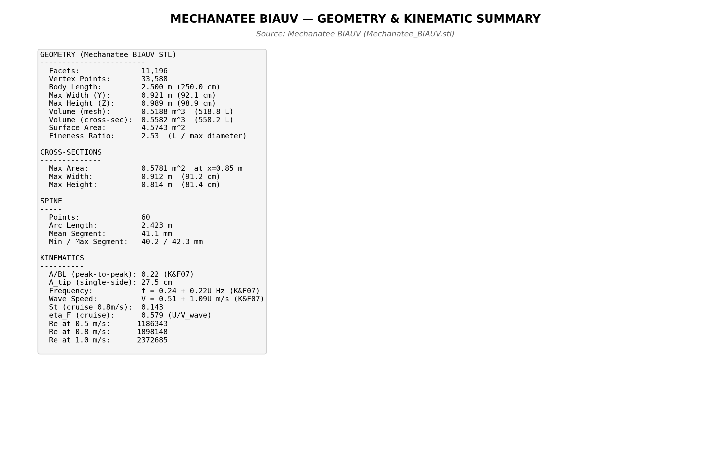
Combined geometry and kinematic parameter summary — body morphology mapped to propulsive mechanics.
Digital Twin
3D Model & Visualization
Interactive exploration of the full Mechanatee geometry — the bridge
between biological morphology and engineered form.
Functional Anatomy
Musculoskeletal System — Hybrid Sirenian Model
Complete musculoskeletal model: 50 shaped manatee vertebrae across 5 spinal
regions with 34 dugong-derived muscle groups mapped from Domning (1977).
See the Anatomy Sources caveat in the Propulsion section for the dugong-muscle /
manatee-spine hybrid disclosure.
Use preset buttons to isolate upstroke vs. downstroke muscle groups.
Epaxial System (Upstroke)
M. longissimus dorsi runs atlas to tail tip as the principal dorsal extensor.
Transversospinalis and M. iliocostalis provide medial and lateral dorsal force.
Force transmits distally through the subdermal connective tissue sheath (Pabst 1996).
Hypaxial System (Downstroke)
SVL is the primary downstroke muscle, with SVM, M. flexor haemalis (along chevron bones),
and M. rectus abdominis providing ventral flexion. The cutaneus trunci caudal mass,
unique to sirenians, adds subcutaneous tail flexion power.
Lateral System (Steering)
Intertransversarius and SDL produce lateral bending for yaw control.
Positioned at transverse process tips for precise slow-speed maneuvering
in complex shallow-water environments.
Forelimb Musculature — Position Control, Not Propulsion
The flipper musculature is now anatomically complete in the overlay above —
30 forelimb muscles (15 per side) covering the extrinsic dorsal/ventral group, intrinsic
shoulder, arm, forearm, and hand. But these muscles are functionally distinct from the
tail. Reidenberg (2018, Encyclopedia of Marine Mammals, 3rd ed., p. 623) is explicit:
"These muscles are used by sirenians for slow ambulation along the riverbed, but are
not particularly strong as these fully marine mammals never bear weight on land…
reduced in cetaceans as they use the flippers primarily for adjusting swimming position
and breaking, but not propulsion."
Engineering implication: The Mechanatee flippers receive a separate, lower-class
actuator system — small position-control servos or low-force shape-memory bundles —
rather than the high-power HASEL/SMA stacks driving the caudal segments. The forelimb is a
stabilization and station-keeping subsystem, not a propulsive one.
Sources: Reidenberg, J.S. (2018) "Musculature" in Encyclopedia of Marine Mammals 3rd ed.,
pp. 622-625, Figs 1C & 2C (West Indian manatee plates); Domning, D.P. (1977)
Smithsonian Contributions to Zoology No. 226, Figs 46-47 (dugong forelimb dissection).
Hydrodynamic force vectors during dorso-ventral undulation — thrust generation at each stroke phase.
Lift and drag decomposition along the tail during one full oscillation period.
Inter-vertebral joint angles across the caudal spine — amplitude increases progressively toward the fluke.
Bending torque distribution — peak at the lumbar-caudal transition where muscle cross-section is greatest.
Full three-layer anatomy: semi-transparent skin, color-coded musculature, and skeleton
with ribs, vertebrae, and flipper bones. Toggle layers independently.
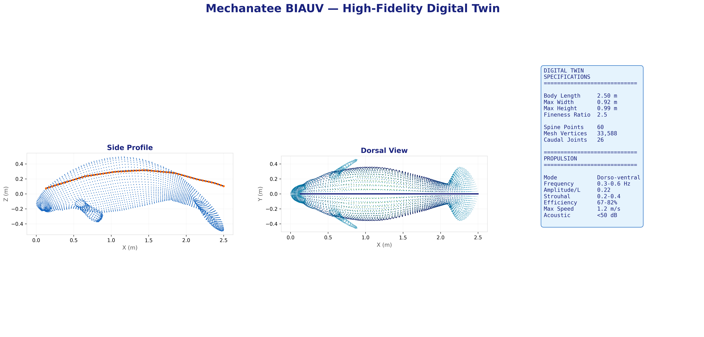
Mesh & Spine Registration
The digital twin is built from a 25,200-point triangulated exterior mesh
with an embedded 60-point spine centerline extracted from biological CT data.
Spine curvature defines the neutral axis for all bending moment calculations
and serves as the reference frame for kinematic deformation.
Each of the 26 caudal vertebral disks is modeled as an elliptical cross-section
(~3.5 cm × 2.5 cm) in PA12 nylon or UHMWPE, with ball-and-socket joints
allowing ±15° dorso-ventral and ±10° lateral articulation.
Actuators mount to 6 attachment points per disk (2 dorsal, 2 ventral, 2 lateral)
via stainless steel clevis pins or embedded Kevlar tendons.
The mesh-to-spine binding uses cubic spline interpolation along the body axis,
with the fluke region deforming via local tangent-angle rotation to replicate
the passive pitching behavior of biological manatee connective tissue.
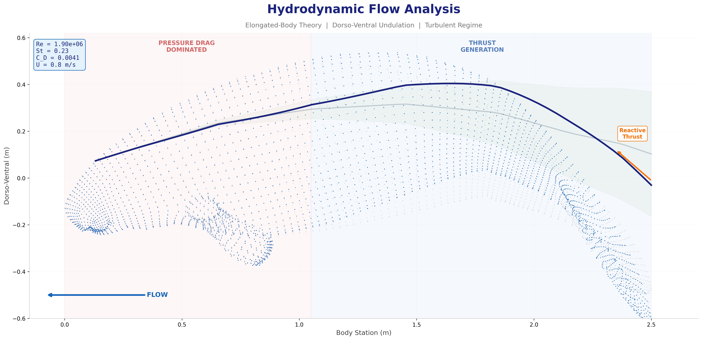
Hydrodynamic Infographic
CFD framework uses ANSYS Fluent or OpenFOAM for co-simulation with
the CPG control system: CPG generates joint angles → set boundary
motion in CFD → extract forces → feed to RL reward for parameter
optimization.
Mechanatee is designed for the operating envelope where conventional propeller AUVs fail
or cause unacceptable disturbance: shallow, vegetated, animal-rich water.
Its low Strouhal number (St ≈ 0.14), absence of cavitation, and biomimetic visual
profile open mission classes that propeller vehicles cannot safely or ethically perform.
1 · Manatee Health & Behavioral Monitoring
Persistent, near-silent shadowing of free-ranging manatees without the spook response
triggered by propeller ROVs. Onboard payload supports thermal imaging for
cold-stress detection in winter aggregation sites (Crystal River, TECO Big Bend),
photo-ID of dorsal scars for individual tracking, and body-condition scoring via
photogrammetry. The vehicle's subcarangiform gait and 5-m visual indistinguishability
from a juvenile conspecific make it a candidate conspecific-attraction probe
for behavioral ecology — testing whether real animals respond to it as one of their own.
2 · Seagrass Habitat Mapping (Non-Destructive)
Propeller AUVs cannot operate in dense Thalassia or Halodule beds
without prop-fouling and uprooting seedlings — the very habitat that needs surveying.
Mechanatee's undulatory drive produces no propwash and no sediment plume, making it
suitable for baseline cover surveys, pre/post-dredge impact studies, and
restoration site monitoring. Downward camera + DVL altimetry yields rugosity and
canopy-height transects in water too shallow for traditional survey vessels.
3 · Harmful Algal Bloom & Water-Quality Tracking
Florida red tide (Karenia brevis) and east-coast brown-tide events develop in
shallow estuarine waters where rapid, repeatable in-situ sampling is operationally hard.
With a YSI EXO2 multiparameter sonde aboard, Mechanatee can run autonomous
gradient-following transects across a bloom front, sampling chlorophyll,
dissolved oxygen, salinity, and turbidity at densities that satellite remote sensing
cannot resolve. Persistent low-disturbance loitering in fish-kill zones is feasible
because there is no rotating machinery to entrain debris.
4 · Entanglement & Injured-Animal Detection
Watercraft strikes and crab-trap entanglement are leading causes of manatee mortality.
A persistent patrol platform that can operate in < 1 m water, identify
individuals by scar pattern, and stream alerts to FWC rescue networks would close a real
gap in the response chain. The acoustic signature is dominated by HASEL-driver
switching noise — orders of magnitude below propeller tonals — so it does not
contribute to the very chronic noise stressor that drives marine-mammal habitat displacement.
5 · Coastal Permitting & EIS Baseline Surveys
Dredging, seawall, marina, and nearshore renewable-energy projects all require
environmental baseline data that is defensible against the “survey-method-itself-disturbed-the-site” objection.
Mechanatee's no-prop-wash, low-noise profile gives consultants a legally cleaner
survey instrument for protected-species habitat in Florida waters where takes are
federally regulated under the Marine Mammal Protection Act and Endangered Species Act.
6 · Open Sirenian-Biomechanics Research Platform
Beyond a single-purpose vehicle, the Mechanatee musculoskeletal model and CPG
controller form an open testbed for sirenian biomechanics questions
that cannot be addressed in vivo: how does dorso-ventral wavelength change under
added drag? What is the energetic cost of feeding posture? Can the same gait
controller drive both manatee and dugong morphologies? The platform invites academic
collaboration as a shared research instrument, not just a product.
The Operating-Envelope Argument
Every one of the missions above shares a single feature: they cannot be performed
well by a propeller AUV. Mechanatee's value is not that it is a faster fish-robot.
Its value is that it occupies the shallow, vegetated, animal-occupied corner of the
coastal-survey design space where rotating machinery is operationally, legally, or
ethically excluded. That is the niche.
Research Context
Development & Roadmap
2023
Generation 1 — Servo-Motor Paddle
Proof-of-concept with servo-driven paddle and cable mechanism. Established baseline kinematics, form factor, and initial hydrodynamic testing.
2024
Generation 2 — SMA & Digital Twin
Nitinol shape-memory alloy concept. 25,200-point mesh and 60-point spine digitized. TCP vs. Nitinol actuator trade study: Nitinol with active glycol + PCM cooling achieves 0.3–0.6 Hz target.
2025–2026
Generation 3 — HASEL Electrostatic Actuation
Solid-state HASEL actuators (Artimus C-6519) in antagonistic dorso-ventral pairs across 26 caudal segments.
CPG control via coupled Hopf oscillators with phase-shifted 6 kV waveforms.
10 prototype iterations completed.
Phased Build
HASEL Development Roadmap
Phase 1: Benchtop validation — 2× C-6519 + PS2-02-A driver. Characterize bending angle, frequency response, fatigue, waterproofing.
Phase 2: 5-segment tail section with CPG-driven tank test.
Phase 3: Full 26-segment integration, Config C 2-DOF, open-water testing in Indian River Lagoon.
Key References
Kojeszewski & Fish (2007)
"Swimming kinematics of the Florida manatee." J. Exp. Biology 210, 2411–2418. Primary source for all kinematic regressions.
Lighthill (1971)
Large-amplitude elongated-body theory of fish locomotion. Foundation for reactive thrust calculations.
Taylor, Nudds & Thomas (2003)
Flying and swimming animals cruise at a Strouhal number tuned for high power efficiency. Optimal range St = 0.20–0.40; manatees operate at the low end.
Review of PAM actuators. Fatigue life >120M cycles; power/weight >1 kW/kg.
Triantafyllou et al. (1995)
MIT RoboTuna: vortex control and propulsive efficiency. Baseline comparison for Mechanatee design.
Contact
Haylie Garman —
Principal Investigator, Marine Biologist, Data Analyst & Ocean Engineer
Sirenia Systems Research · FIT Alumni 2025
Available for projects, research collaborations, and freelance opportunities.
Get in touch →
10 prototype iterations and hydrodynamic testing over 2.5 years.
Estimated Final Build Cost
The fully integrated Mechanatee BIAUV — including HASEL actuator array,
HV driver electronics, 3D-printed vertebral spine, composite skin, sensor suite
(YSI EXO2, DVL, IMU, hydrophone), battery system, central controller, and
vehicle body fabrication — is estimated at approximately
$400,000
for the recommended Config C (2-DOF, 52 actuators) final build.